DRAGON BALL Z (1989-1996)
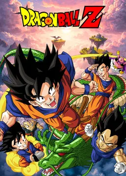
TRAILER
Este anime segue a vida adulta de Goku, o defensor do planeta terra que percebe que é de outro planeta. Goku, seus amigos e aliados devem agora defender a Terra de novos inimigos alienígenas, que resulta em enormes batalhas épicas. O melhor do anime.
A série Dragon Ball Z contém alguns dos mais carismáticos personagens, grandes seqüências de combate, e tramas fortes nas 4 sagas da história. Durante a série, Goku desenvolve seus poderes, aperfeiçoa e se transforma em Super-Saiyajins, e mais tarde consegue fundir seus poderes com outros personagens. Um enredo brilhante em seus 291 episódios que deixará saudades.
0NE PICE (1999 – atualmente)

TRAILER
One Piece possui uma atmosfera interessante de aventura e amizade. É sobre um pirata chamado Luffy que deseja se tornar um rei pirata, que representa o maior de todos os piratas.
Em uma parte há as denominadas frutas do mal que dão poderes grandes. Luffy possui oder de borracha, ou seja, ele pode esticar todas as partes de seu corpo. E durante suas aventuras, ele recruta outros piratas, obtém um navio decente, sendo um detalhe muito interessante, as lutas impressionantes.
NARUTO (2002 – 2017)
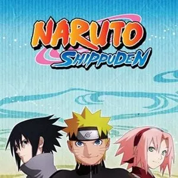
TRAILER
A série de Masashi Kishimoto segue o jovem ninja destemido, Naruto Uzamaki através de seu treinamento para se tornar um Hokage, o líder máximo de sua vila. O programa apresenta um enredo brilhante e elaborado que segue as mesmas aventuras de Naruto no Manga. Muitas vezes, repleto de drama, o que faz Naruto particularmente agradável a muitos de seus espectadores é o humor e ação que acompanha a série. O anime foi divido em duas partes. A primeira conta com 220 episódios e vai até 9° temporada. A segunda, intitulada de Naruto Shippuden, tem 381 episódios até o momento, já na 16° temporada.
Más algumas Recomendações
- Fullmetal Alchemist: Brotherhood
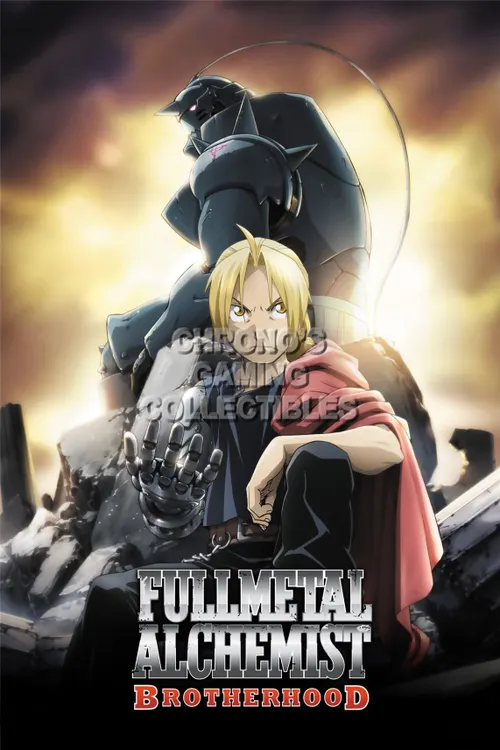
- Attack on Titan
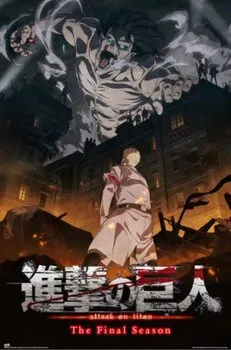
- Demon Slayer
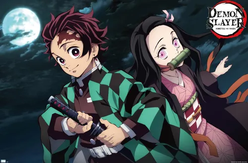
- Jujutsu Kaisen
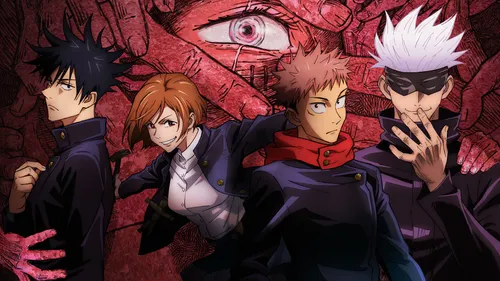
MEU TOP 5 ANIMES FAVORITOS
- Dragon Ball Z
- Naruto
- Code Geass
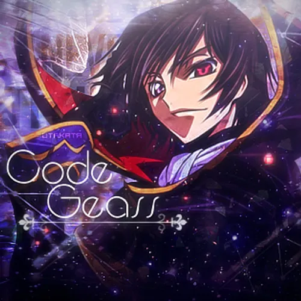
- Tensei Shitara Slime Datta Ken
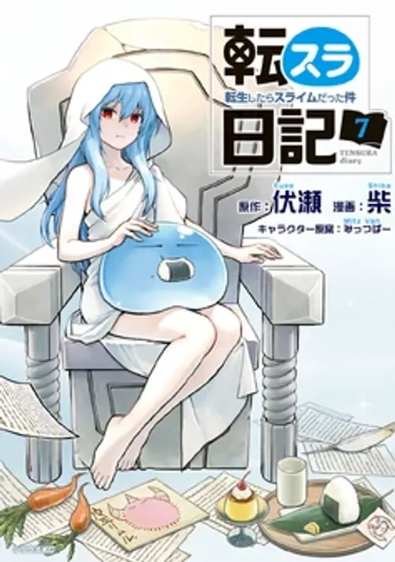
- Classroom of the Elite
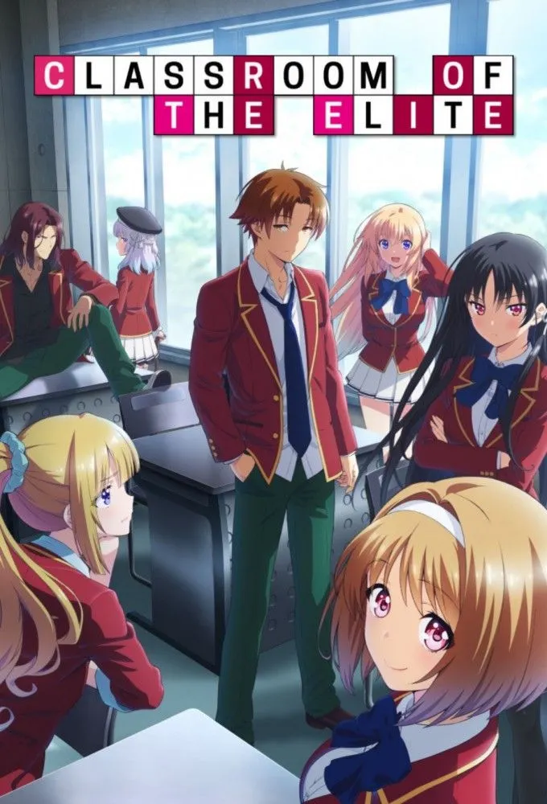
MANGÁS
TOKYO GHOUL
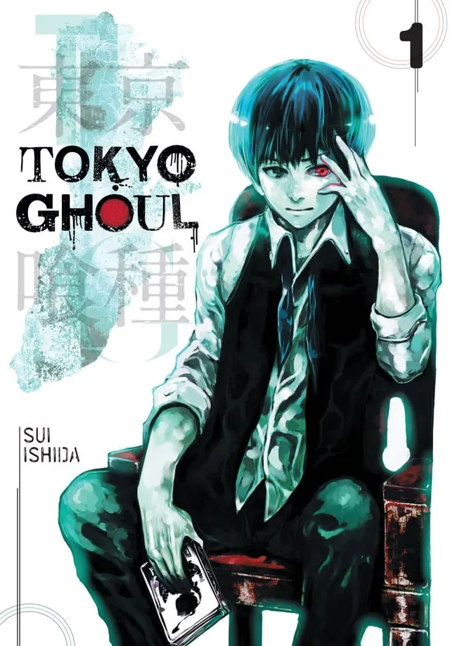
A história gira em torno de Ken Kaneki, um estudante universitário que, após um encontro com a ghoul Rize Kamishiro, sobrevive a um ataque graças a uma transfusão de órgãos dela,o que o transforma em um meio-ghoul. Agora, ele precisa consumir carne humana para sobreviver, mas luta para manter sua humanidade.
DETECTIVE CONAN
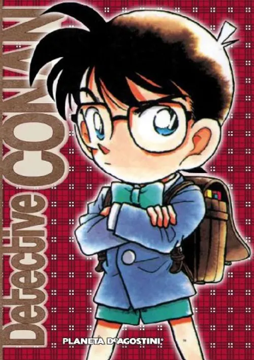
Detective Conan, também conhecido como Case Closed nos Estados Unidos, é um mangá de mistério japonês escrito e ilustrado por Gosho Aoyama, serializado na revista Weekly Shōnen Sunday da Shogakukan desde janeiro de 1994.
A história acompanha Shinichi Kudo, um detetive colegial que, após investigar uma organização misteriosa conhecida como Organização Negra, é envenenado por membros dessa organização com uma droga experimental que o transforma fisicamente em uma criança de sete anos.
Para preservar sua identidade e continuar suas investigações, ele adota o pseudônimo de Conan Edogawa e vive com sua amiga de infância Ran Mouri e seu pai, o detetive particular Kogoro Mouri.
BLUE LOCK
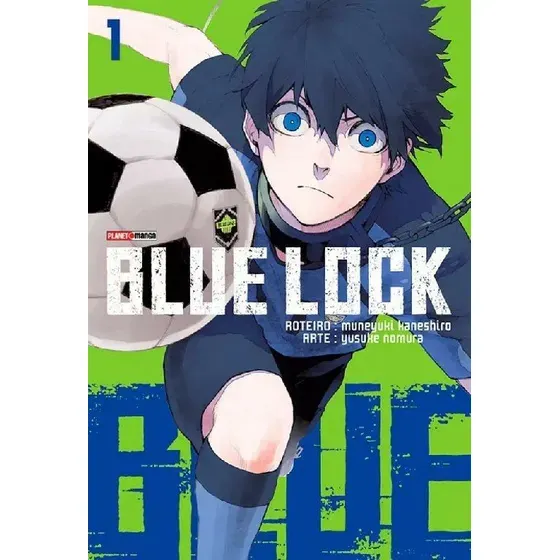
Blue Lock (ブルーロック, Burū Rokku) é uma série japonesa de mangá shōnen sobre futebol, escrita por Muneyuki Kaneshiro e ilustrada por Yusuke Nomura, publicada pela Kodansha e serializada desde agosto de 2018 na revista semanal Weekly Shōnen Magazine.
A história começa com a eliminação do Japão da Copa do Mundo FIFA de 2018, o que causa uma profunda inquietação na comunidade do futebol japonês, levando a Associação Japonesa de Futebol a criar um programa radical para resolver a falta de um atacante egoísta e eficaz.
Meu top 5 Mangás Favoritos
- TOKYO GHOUL
- BLUE LOCK
- Jūjika no Rokunin
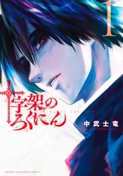
- BESERK
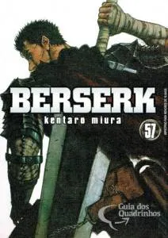
- CHAINSAW MAN
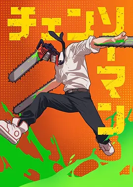
Recomendações de Animes e Mangás
| Lista de Recomendações |
| Categoria |
Título |
Gênero |
| Animes |
Fullmetal Alchemist: Brotherhood |
Ação / Fantasia |
| Mob Psycho 100 |
Comédia / Sobrenatural |
| Made in Abyss |
Aventura / Drama |
| Mangás |
Berserk |
Dark Fantasy |
| Oshi no Ko |
Drama / Mistério |
|
© 2025 Espero Que Tenham Gostado
|
Fim Da Pagina
inicio da paginá